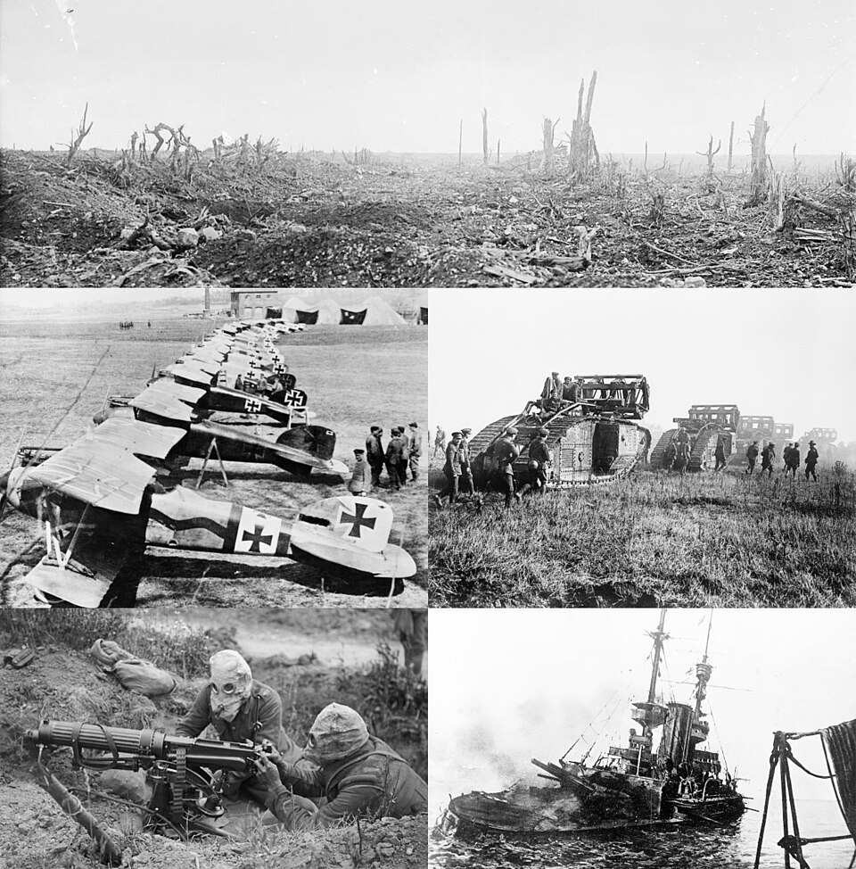

За годинниковою стрілкою згори: Наслідки артилерійського обстрілу під час битви на Соммі; британські танки Mark IV йдуть на штурм траншей Лінії Гінденбурга; лінкор британського Королівського Флоту HMS Irresistible тоне після попадання на міну під час битви в Дарданеллах; британська обслуга кулемета Віккерс в протигазах; німецькі біплани Albatros D.III.
Приводом для війни стало вбивство австро-угорського спадкоємця ерцгерцога Франца Фердинанда в Сараєво, яке 28 червня 1914 здійснив боснійський серб і югославський націоналіст Гаврило Принцип. Це призвело до погіршення відносин між Австро-Угорщиною і Сербією та спричинило дипломатичну липневу кризу. Ультиматум Австро-Угорської імперії від 23 липня Сербія виконала не повністю, через що армія імперії розпочала військові дії.
Мережа взаємопов'язаних альянсів розширила й поглибила кризу, перетворивши локальну суперечку між двома балканськими країнами на велику міжнародну кризу, до якої була втягнута більшість країн Європи. До липня 1914 року великі держави Європи були розділені на дві коаліції: Троїсту Антанту, що складалася з Франції, росії та Великої Британії; і попередньо створений Троїстий союз Німеччини, Австро-Угорщини та Італії. Троїстий союз мав лише оборонний характер, що давало Італії змогу залишатися поза війною до укладення Лондонської угоди 26 квітня 1915 року, коли вона приєдналася до союзних держав після погіршення її відносин з Австро-Угорщиною.
Російська імперія вважала за необхідне підтримати Сербію і схвалила часткову мобілізацію після того, як Австро-Угорщина 28 липня 1914 року обстріляла артилерією сербську столицю Белград, розташовану за кілька кілометрів від кордону. Увечері 30 липня оголосили повну російську мобілізацію; наступного дня Австро-Угорщина та Німеччина зробили те ж саме. Водночас Німеччина вимагала від Росії демобілізації протягом дванадцяти годин. Після невиконання Росією цієї вимоги, 1 серпня 1914 року, Німеччина оголосила Російській імперії війну, проголосивши тим самим підтримку Австро-Угорщині, яка пішла за прикладом союзника 6 серпня 1914 року. Франція розпочала повну мобілізацію на підтримку Російської імперії 2 серпня 1914 року. Врешті-решт, Перша світова війна призвела до розколу європейського континенту на два великих союзи — суперники:
- союзні держави, до складу яких передусім увійдуть Сполучене Королівство Великої Британії та Ірландії, США, Франція, Російська імперія, Італія, Японія, Португалія, Греція, Сербія і Чорногорія;
- Центральні держави, до складу яких, перш за все, увійдуть Німецька імперія, Австро-Угорська імперія, Османська імперія та Болгарія.
Стратегія Німеччини щодо війни на два фронти проти Французької республіки та Російської імперії полягала в тому, аби швидко зосередити основну частину своєї армії на Заході, і розгромити Францію протягом 6 тижнів, а потім перекинути сили на Схід до того, як Росія зможе повністю мобілізуватися; згодом, даний план став відомий, як план Шліффена. 2 серпня Німеччина почала вимагати від Бельгії вільного проходу її територією, що було важливою складовою для досягнення швидкої перемоги над Францією. Після того, як їй у цьому відмовили, німецькі війська вторглися в Бельгію 3 серпня і того ж дня оголошено війну Франції; бельгійський уряд посилався на Лондонський договір 1839 року і, дотримуючись власних зобов'язань за цим договором, Велика Британія оголосила війну Німеччині 4 серпня. 12 серпня Англія та Франція також оголосили війну Австро-Угорщині; 23 серпня Японія стала на бік Великої Британії, захопивши німецькі володіння в Китаї та на Тихому океані. У листопаді 1914 року, Османська імперія вступила у війну на боці Австро-Угорщини та Німеччини, відкривши фронти на Кавказі, в Месопотамії та на Синайському півострові. Війна велась на теренах колоніальних володінь імперій кожної держави (і тим самим залучала їх до війни), розповсюджуючи конфлікт на Африку та по всьому світу.
Просування Німеччини на землі Франції зупинили в битві на Марні, і наприкінці 1914 року Західний фронт почав війну на виснаження, відзначену довгою серією окопних ліній, які мало змінилися до 1917 року (навпаки, Східний фронт, відзначався значно більшими обмінами територій). У 1915 році Італія приєдналася до союзних держав і відкрила фронт в Альпах. Болгарія приєдналася до Центральних держав 1915 року, а Греція приєдналася до союзників у 1917 році, розширюючи Балканський театр війни. Сполучені Штати спочатку залишалися нейтральними, хоча навіть перебуваючи нейтральними, вони стали важливим постачальником військової техніки для союзників. Зрештою, після затоплення американських торгових суден німецькими підводними човнами, заяви Німеччини про те, що її флот відновить необмежені атаки на нейтральне судноплавство, і відкриття розвідкою інформацію про те, що Німеччина намагається підбурити Мексику до війни проти Сполучених Штатів, США оголосили війну Німеччині 6 квітня 1917 року. Підготовлені американські сили не прибували на фронт у великій кількості до середини 1918 року, але зрештою сягнули близько двох мільйонів військових.
Хоча Сербія зазнала поразки 1915 року, а Румунія приєдналася до союзних держав 1916-го, але зазнала поразки в 1917 році, жодна з великих держав офіційно не вийшла з війни до 1918 року. Лютнева революція 1917 року в Царській Росії призвела до заміни монархії Тимчасовим урядом, який згодом також усунули від влади та створили Радянську Соціалістичну Республіку, що уклала з Центральними державами Брест-Литовський мирний договір у березні 1918 року, припинивши участь Російської імперії у війні. На той час, Німеччина отримала можливість перекинути значну кількість військ на Західний фронт. Використовуючи нову тактику, німецький березневий наступ 1918 року спочатку був успішним. Союзники відступили й утрималися від контратак. Останні німецькі резерви були вичерпані, оскільки щодня прибувало 10 000 свіжих американських військових. Союзники відкинули німців у стоденному наступі, безперервними серіями атак, на які німці не мали протидії. Одна за одною з війни вийшли Центральні держави: спочатку Болгарія (29 вересня), потім Османська імперія (31 жовтня) і Австро-Угорська імперія (3 листопада). З поразкою своїх союзників, революцією вдома, і небажанням військових воювати, кайзер Вільгельм зрікся престолу 9 листопада, після чого Німеччина підписала Комп'єнське перемир'я 11 листопада 1918 року, закінчивши війну.
Перша світова війна стала значним поворотом у політичному, культурному, економічному та соціальному кліматі світу. Війна та її безпосередні наслідки призвела до численних революцій та повстань. Велика четвірка (Велика Британія, Франція, Сполучені Штати та Італія) нав'язала свої умови переможеним державам у серії договорів, узгоджених на Паризькій мирній конференції 1919 року, найбільш відомим з яких був Версальський договір з Німеччиною. Зрештою, внаслідок війни Австро-Угорська, Німецька, Османська та Російська імперії припинили своє існування, а з їх залишків утворилися численні нові держави, серед яких Чехословацька Республіка, Естонія, Фінляндія, Латвія, Литва, Польська Республіка та Королівство Сербів, Хорватів і Словенців. Німеччина втратила власні колоніальні території. Велика ціна ведення війни також утворила підґрунтя для розпаду Британської Імперії. Однак, попри остаточну перемогу союзників і створення Ліги Націй під час мирної конференції покликаної запобігти майбутнім війнам, Друга світова війна вже розпочалася трохи більше ніж за двадцять років потому.